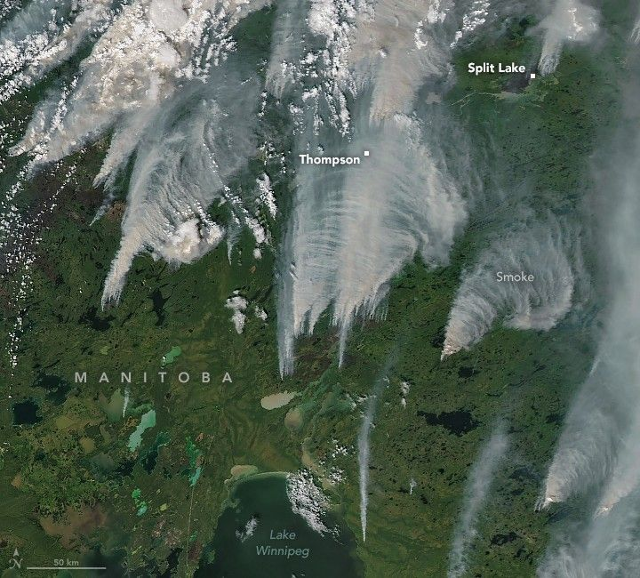

Manitoba Burning
Large fires have burned in Canada’s Manitoba province since May 2025, but the intensity of activity escalated in July. The province’s wildfire service reported 98 active fires burning on July 8, including 16 that were listed as out of control across the northern, western, and eastern parts of the province. Lightning, drought, heat, and strong winds have contributed to the intensity of the latest fire outbreak.
The MODIS (Moderate Resolution Imaging Spectroradiometer) on NASA’s Aqua satellite captured this image of smoke and fires in northern Manitoba on July 9, 2025. At the time the image was acquired, dense smoke plumes from several of the largest fires streamed north; however, satellites have often observed plumes from Manitoba’s fires blowing east in recent weeks and months.
Several communities and more than 10,000 people were under mandatory evacuation orders, according to officials. Among them were Snow Lake, Garden Hill, Lynn Lake, Leaf Rapids, Split Lake, and Pukatawagan. According to news reports, several homes were destroyed in Split Lake, also called Tataskweyak, a Cree Nation community in northern Manitoba.
As of July 9, fires in 2025 had charred 4.8 million hectares across Canada, according to the Canadian Interagency Forest Fire Center. That’s an area about twice the size of New Jersey and nearly four times the 25-year average. Manitoba accounted for about 1 million hectares of burned area, about 20 times more than at the same point in 2024 and 13 times more than the 25-year average.
NASA’s satellite data are part of a global system of observations that are used to track fire behavior and analyze emerging trends. Among the real-time wildfire monitoring tools that NASA makes available are FIRMS (Fire Information for Resource Management System), the Worldview browser, and the Fire Event Explorer. Data from several NASA missions and projects also contribute to web tools and models relevant to the study of air quality.